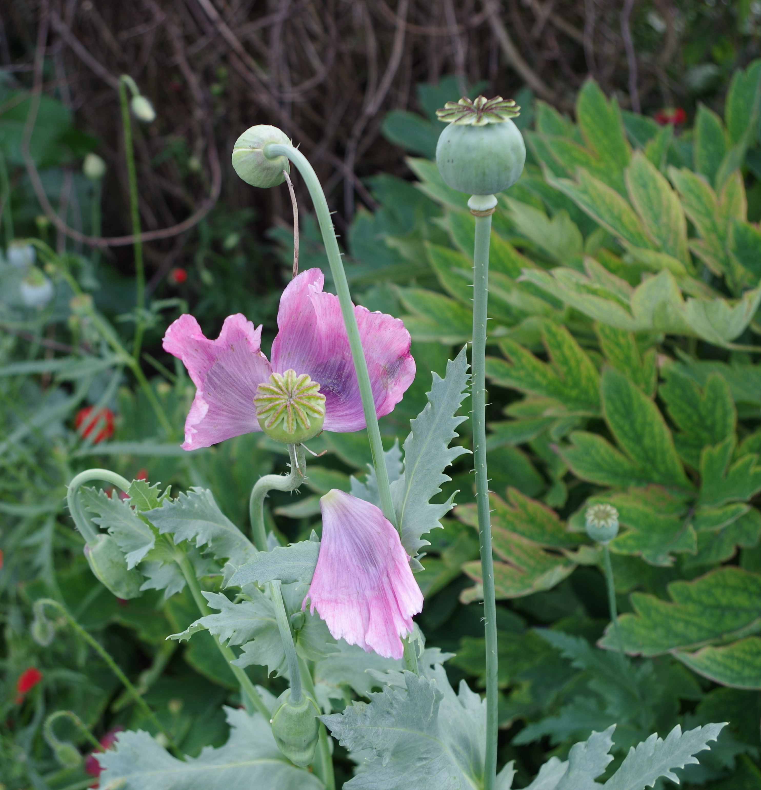

Papaveraceae
poppy family
Roemeria refracta (spotted Asia-poppy) from Wikimedia Commons by Amirh. absnd - Own work, CC0 |
Romneya sp. (Matilija poppy/fried egg poppy) from Wikimedia Commons by Stan Shebs, CC BY-SA 3.0 |
Chelindonium majus (greater celandine) from Wikimedia Commons by Anonim Anonim, CC BY-SA 4.0 |
Fumaria officinalis (earth smoke) from Wikimedia Commons by Zeynel Cebeci - Own work, CC BY-SA 4.0 |
{kind=link}
{kind=link}
{kind=link}
{kind=link}
botanical characteristics
Botany in a Day, p. 60-1 | "Papaveraceae", Wikipedia
- growth form
- plants are usually herbaceous, though a few species form shrubs or evergreen trees (esp. in warmer climates)
- stems/leaves
- leaves are alternate or sometimes whorled and have petioles and no stipules
- usually lobed or pinnatifid (i.e. consisting of several not entirely separate leaflets), or much divided
- all parts contain a well-developed system of latex ducts called "laticifers", that produce milky latex, a watery white, yellow or red juice
- flowers and reproductive structures
- Papaveroideae (poppy) subfamily
- regular, bisexual flowers
- 2-3 usually united sepals and 4, 8, or 12 separate petals (sometimes 6)
- numerous stamens
- ovary positioned superior, at least 2 (usually more) united carpels
- matures as a capsule containing many small seeds
- Fumarioideae (fumitory) subfamily
- irregular, bisexual flowers
- 2 scale-like sepals and 4 petals
- outer petals spread above the narrower inner petals
- usually 6 stamens in two groups of 3 on opposite sides of the pistil, sometimes has 4 stamens opposite the petals
- ovary positioned superior consisting of 2 united carpels
- matures as a capsule or 1-seeded nut
- Papaveroideae (poppy) subfamily
distribution
"Papaveraceae", Wikipedia
- 42 genera and approximately 775 known species worldwide
- cosmopolitan distribution, occurring in temperate and subtropical climates (mostly in the northern hemisphere) like Eastern Asia as well as California in North America
- almost unknown in the tropics
ecological roles
"Papaveraceae", Wikipedia
- pollination is usually entomophile (basically by flies and wasps and bees, less often by beetles)
- in Papaveroideae, the reward is pollen as there is no nectar; the visual attractant is the petals that are usually brightly coloured and often have basal guides, sometimes the attractant can also be the androecium as the petals do not last long
- the presence of an aril suggests dispersion of seeds by ants (myrmecochory), once they have been expelled by the fruit
- many Fumarioideae species have explosive fruits (ballistic)
- Papaveroideae typically grow in cooler and wooded areas, forming part of the undergrowth
common pharmacological constituents
"Papaveraceae", Wikipedia
- many poppies contain narcotic alkaloids, including morphine, heroin, codeine, and opium
- the isoquinolinic alkaloids are derived from berberine, tetrahydroberberine, protopine and benzophenanthridine in Papaveroideae and from spirobenzylisoquinoline and cularine in Fumarioideae
- other alkaloids are derivatives of aporphine, morphinan, pavine, isopavine, narceine and rhoeadine
- other characteristic substances contained within these species include meconic acid and chelidonic acid, as well as cyanogenic glycoside compounds derived from tyrosine (dhurrin and triglochinin)
- stem, leaves, and seed capsules contain acrid latex sap
"Angiosperm families - Papaveraceae Juss.", DELTA
- cyanogenic, or not cyanogenic; cynogenic constituents tyrosine-derived; alkaloids present (nearly always), or absent; berberine present (at least in Argemone), or absent; arbutin absent; iridoids not detected; proanthocyanidins absent; flavonols present; kaempferol, or quercetin, or kaempferol and quercetin; ellagic acid absent (6 species, 6 genera); aluminium accumulation not found; sieve-tube plastids S-type
"Angiosperm families - Fumariaceae DC.", DELTA
- not cyanogenic; alkaloids present; iridoids not detected; proanthocyanidins absent; flavonols present; kaempferol, or kaempferol and quercetin; ellagic acid absent (2 genera, 2 species); sieve-tube plastids S-type
patterns in medicinal actions
- analgesic, sedative actions
- tamasic; invokes the painless state of deep sleep
traditional/cultural uses
"Papaveraceae", Wikipedia
- opium is derived from the latex of the opium poppy seed pods and has been used for centuries due to its psychoactive properties
- the main alkaloids found in opium, such as morphine, and codeine have huge impact on pharmaceuticals and a big importance on many countries that produce it on a large-scale including Afghanistan
- the family is well known for its striking flowers, with many species grown as ornamental plants, including California poppy (Eschscholtzia californica, the California state flower), the stunning blue Himalayan poppies (Meconopsis), several species of Papaver, and the wildflower bloodroot
- only two species are of economic importance for the production of opium and its derivatives for pharmaceutical use: Papaver somniferum is cultivated legally in order to obtain morphine and other opiates, and Papaver bracteatum, for thebaine
- Papaver somniferum is the source of the poppy seeds used in cooking and baking, and poppy seed oil
- some Fumarioideae have a limited use in gardening, with Lamprocapnos spectabilis (bleeding heart), and Pseudofumaria lutea (yellow corydalis) commonly used
- TCM used the boiled and dried tubers of Corydalis yanhusuo
warnings
"Papaveraceae", Wikipedia
- many of these plants are poisonous
- the Mexican prickly poppy is poisonous if taken internally and may cause oedema and glaucoma
- even if an animal, such as a goat, should persist in grazing on this plant, not only will the animal suffer but so will those who drink its milk, because the poisons are passed along in the milk
extra information
prominent genera
- Argemone (prickly poppies)
- Chelidonium (greater celandines)
- Corydalis (corydalises)
- Dicentra (bleeding hearts)
- Eschscholzia (California poppies)
- Fumaria (fumitories)
- Glaucium (hornpoppies)
- Papaver (poppies, incl. opium poppy)
- Sanguinaria (bloodroots)
plant highlights
see list of materia medica entries here
Papaver somniferum
|  from Wikimedia Commons by Dinkum - Own work, CC0 |
common names: opium poppy en español: adormidera, amapola real |
{kind=link}
description
"Papaver somniferum", Wikipedia
- annual herb
- strongly glaucous, giving a greyish-green appearance, and the stem and leaves bear a sparse distribution of coarse hairs
- large leaves are lobed, the upper stem leaves clasping the stem, the lowest leaves with a short petiole
- flowers normally have four white, mauve or red petals, sometimes with dark markings at the base
- fruit is a hairless, rounded capsule topped with 12–18 radiating stigmatic rays, or fluted cap
- all parts of the plant exude white latex when wounded
distribution
"Papaver somniferum", Wikipedia
- native range of opium poppy is probably the Eastern Mediterranean, but extensive cultivation and introduction of the species throughout Europe since ancient times have obscured its origin
- it has escaped from cultivation, or has been introduced and become naturalized extensively in almost all other countries of the world with suitable, temperate climates
medicinal/magical uses
The New Age Herbalist, p. 93
- unripe seed capsules are used for the extraction of morphine and manufacture of codeine
- ripe seeds are used in cooking
Murder, Magic, and Medicine, p. 173-7
- Sumerians used opium as early as 4000 BC
- widely used as an analgesic and sleeping draught by various cultures across Asia and Europe for centuries
- laudanum is a preparation of opium popularized by Paracelcus in the 16th century
- recreational use of opium increased dramatically in 17th century, likely due to the rise in and subsequent banning of the smoking of tobacco in China
preparation methods
"Papaver somniferum", Wikipedia
- opium (dried latex)
- laudanum (tincture of opium)
warnings
"Opium", Wikipedia
- opium is narcotic and regular use can lead to drug tolerance or physical dependence
Corydalis spp.
from Wikimedia Commons by Jerzy Opioła - Own work, CC BY-SA 4.0 |
common names: corydalis en español: corydalis name in TCM: yán hú suǒ (延胡索) |
{kind=link}
description
"Corydalis cava", Wikipedia
- has long-spurred flowers which appear in spring
- flowers may be mauve, purple, red, or white
"Corydalis yanhusuo", Wikipedia
- produces 5 to 15 purple-blue tubular flowers in clusters that curve out at the opening
- tubers are yellow and round
distribution
"Corydalis cava", Wikipedia
- native to moist, shady, woodland habitats throughout most of mainland Europe, although most common in central and southeast Europe
"Corydalis yanhusuo", Wikipedia
- native to high-altitude grasslands across China including in the provinces of Anhui, Henan, Hubei, Hunan, Jiangsu, and Zhejiang, but is more widely cultivated
medicinal/magical uses
The Modern Herbal Dispensatory, p. 218-9
- analgesic, sedative, soporific, warming, relaxing
- contains an alkoloid similar to those in opium poppy but much milder
- central nervous system depressant, appropriate for pain of any cause, esp. that of rhemuatism, arthritis, and menstruation
- aid for sleep and anxiety
The New Age Herbalist, p. 59
- contains alkaloids that have been used in orthodox medicine to treat Parkinson's and Menière's diseases
- pain reliever for menstrual cramping, gastric and abdominal pain, and headaches
- analgesic effect is about 1% the strength of opium
preparation methods
The Modern Herbal Dispensatory, p. 218-9
- decoction
- tincture
- powder
warnings
The Modern Herbal Dispensatory, p. 218-9
- not for use during pregnancy
The New Age Herbalist, p. 59
- should only be used by trained herbalists
Sanguinaria canadensis
from Wikimedia Commons by Nichole Ouellette - Own work, CC BY-SA 4.0 |
common names: bloodroot en español: sanguinaria |
{kind=link}
description
"Sanguinaria", Wikipedia
- one large basal leaf with five to seven lobes
- leaves and flowers sprout from a reddish rhizome with bright orange to red sap
- the rhizomes grow longer each year, and branch to form colonies
- flowers have 8–12 delicate white petals, many yellow stamens, and two sepals below the petals, which fall off after the flowers open
- flowers open when they are in sunlight and close at night
distribution
"Sanguinaria", Wikipedia
- native to eastern North America from Nova Scotia to Florida, and west to the Great Lakes and down the Mississippi embayment
- grows in moist to dry woods and thickets, often on floodplains and near shores or streams on slopes; grows less frequently in clearings and meadows or on dunes, and are rarely found in disturbed sites
- listed as 'Least Concert' on the IUCN Red List of Threatened Species; listed as 'Secure' by NatureServe
medicinal/magical uses
The Modern Herbal Dispensatory, p. 189-90
- antifungal, antiseptic, bitter, lymphatic, drying, cooling
- antimicrobial expectorant for chronic lung infections
- powerful lymph-moving herb, used in formulas for chronically swollen lymph nodes
- externally for fungal infections, eczema, skin disorders, skin cancers, ringworm, scabies, warts, venereal sores
The New Age Herbalist, p. 93
- red roots used to make body paints by Native Americans
- fairly harsh stimulating expectorant
- possible antibacterial and anticancer actions
preparation methods
The Modern Herbal Dispensatory, p. 189-90
- tincture
- oil/salve
warnings
The Modern Herbal Dispensatory, p. 189-90 | The New Age Herbalist, p. 93
- use internally in very small doses; large doses can be poisonous and cause nausea, vomiting, headaches, and respiratory failure
- do not use during pregnancy
- for use under professional supervision only
- listed as unsafe by the FDA
sources
"Angiosperm families - Fumariaceae DC." on DELTA - DEscription Language for TAxonomy. Retrieved 28 August 2025.
"Angiosperm families - Papaveraceae Juss." on DELTA - DEscription Language for TAxonomy. Retrieved 28 August 2025.
"Corydalis cava" on Wikipedia. Retrieved 28 August 2025.
"Corydalis yanhusuo" on Wikipedia. Retrieved 28 August 2025.
Easely, Thomas and Steven Horne. The Modern Herbal Dispensatory (2016)
Elpel, Thomas J. Botany in a Day: The Patterns Method of Plant Identification (2021)
Goldberg Blackthorn, Samantha. Ace of Cups Herbal Medicine and Botanical Magic Herbal School (2024)
Mabey, Richard et al. The New Age Herbalist (1988)
"Opium" on Wikipedia. Retrieved 28 August 2025.
"Papaver somniferum" on Wikipedia. Retrieved 28 August 2025.
"Papaveraceae" on Wikipedia. Retrieved 28 August 2025.